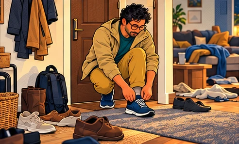

Alex had plenty of ideas about how to live.
Tuesday was where he kept losing them.
The list
The kettle clicked on. Alex reached for his phone.
Three work messages. The weather. A stranger running beside the sea. A video he would not remember by lunch.
When he looked up, the kettle had gone quiet and he was late.
On the fridge was the routine he had written on Sunday: wake early, run, read, meditate, stop scrolling. There was a matching list in a new notebook.
He pulled the note down and put it beside the recycling. He did not throw it away. That would mean giving up.
Next Monday, he thought. A proper start.
Why a smaller beginning can help1,2
The missing sentence
At his desk in the next room, Alex read the same sentence for the fourth time.
He had answered two messages, checked a delivery and opened a news story. The report still needed a first paragraph.
Finish the report was written at the top of his page. Underneath, he wrote something smaller: explain the problem in three sentences.
He put the phone in a drawer, with calls from home allowed through.
A few minutes later, three rough sentences existed. He crossed out one. Changed another. Kept working.
Before his next meeting, he left himself a note: add the example.
What interruptions research supports12,13
Phone notifications disrupted performance in a controlled attention task. That supports reducing avoidable alerts; it does not establish a fixed number of lost minutes at work. Reviews find clearer benefits of short breaks for fatigue and vigour than for performance. No one work-break ratio is best for everyone.[12][13][B4]
As far as the corner
After lunch, Alex noticed the shoes by the door. He had left them there after the weekend.
There was no time for the walk he had planned. There was time to put them on.
Outside, a delivery van blocked half the pavement. Someone was arguing with a bin lid. The world was getting on with a perfectly ordinary Tuesday.
At the corner, Alex turned back.
His watch barely had anything to report. He almost laughed. That was the walk?
Back inside, he left the shoes where he could see them.
A starting point is not the full health dose9
Any activity is better than none. Adult guidelines recommend building toward 150-300 minutes of moderate activity weekly, or 75-150 vigorous minutes, or a mix, plus strengthening all major muscle groups at least twice weekly. A walk to the corner is our fictional starting example, not a substitute for that guidance. Adapt movement to your health and access needs.[9]
The part he had not heard
That evening, Maya was halfway through a story when Alex said, “Mm.”
She stopped.
“You didn’t hear that, did you?”
He could have repeated the last few words. He had become quite good at that.
Instead, he put the phone on the shelf behind him.
“Sorry. Can you tell me that again?”
Maya waited a moment, then started over. It had been a difficult meeting. She had tried to call on the way home, but he had been in another meeting.
This time, he let her finish. Then he asked what had happened next.
Connection matters without a happiness guarantee18
Stronger social relationships are associated with better survival in longitudinal research. These studies are largely observational; they do not prove that one conversation extends life. This scene is a fictional example of attention and listening, not a tested intervention. Relationship quality and safety matter.[18][B7]
No new morning routine
Later, Alex opened the notebook.
The old list was still there. For a moment he considered improving it. A better schedule. A cleaner start. Perhaps a whole new page.
Then he looked at the time.
He wrote one line: after lunch, shoes on.
The kitchen light went off. He left the phone charging on the shelf and read a few pages under the lamp.
He was not suddenly calm. The report was still unfinished. He had not replied to every message.
He closed the book anyway.
Sleep should have room before another routine4,5,8
Adult guidance recommends at least seven hours of sleep regularly, with individual needs varying. Daytime light and dimmer evening light support body timing. These are broad principles, not a guaranteed sleep routine. Persistent insomnia needs more than sleep hygiene; cognitive behavioural therapy for insomnia (CBT-I) is recommended. Do not drive when sleepy.[4][5][8][B3]

Of course he missed it
Wednesday’s lunch disappeared between meetings. On Thursday, it rained.
By evening, Alex was looking at the notebook again. Two missed days. There it was: the familiar proof that he never stuck to anything.
He nearly tore out the page.
Instead, he noticed what he was doing. A missed walk had become a verdict.
He could leave the page alone.
On Friday, after lunch, he put his shoes on. He went only as far as the corner again. This time, he did not ask whether it counted.
What the setback does and does not show17,20
Acceptance and commitment therapy (ACT) can help people notice thoughts and choose actions guided by what matters. Evidence for a full therapy does not prove the effect of a single phrase or this story. Missing a routine is not a diagnosis or a character assessment. Persistent distress or difficulty functioning deserves qualified support.[17][20][B6]
The kettle
A week later, the kettle clicked on.
Alex reached for his phone. His hand was already halfway there when Maya asked whether he wanted milk.
He looked up.
“Yes. Thanks.”
She handed him a mug. He asked how the meeting had gone.
The shoes were still by the door. The notebook was open on the table. There were dishes in the sink.
His phone lit up on the shelf.
The kettle clicked off. He left the phone where it was.
Some days, the useful change is small enough
to fit between the things already happening.
You do not have to copy Alex’s day.
Choose one part of your own.